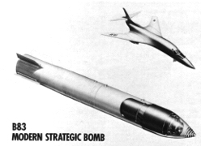
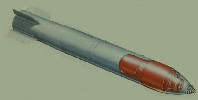
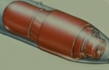
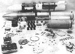

|  | ||
|  B83 Bomb Cutaway (734x370; 24 K) |
 B83 Warhead Close-up (338x219; 13 K) |
 B83 Components (517x332; 47 K) |
The megaton class B83 is the most modern nuclear bomb in the U.S. arsenal. It is the second highest yield weapon now possessed by the U.S. and has options for variable yields.
| Available Yields | Low Kiloton Range/ 1200 Kilotons |
|---|---|
| Weight | 2408 lb |
| Length | 12 ft |
| Body Diameter | 18 in |
| Number In Service | 650 |
Two stage radiation implosion weapon.
High yield strategic bomb with variable yield options ("dial-a-yield" or DAY), and flexible fuzing and delivery options. Designed for high-speed external carriage and low altitude delivery. Developed to replace a larger number of less flexible weapons: the B28, B43, and (partially) the B53.
The B83 was the first U.S. nuclear weapon to enter development engineering with the design requirement that insensitive high explosive be used.
May exist as both a basic mod and a Mod-1 variant.
Similarity of warhead shape to the B61/W80 family indicates a similar internal design (see W80 page for discussion).
A major design feature for the B83 is its capability for accurate, low-level supersonic delivery (up to Mach 1.4) against hard targets (ICBM silos, etc.). The weapon is thus designed for relatively hard impacts on irregular reinforced concrete surfaces. Heavy steel weapon body in sub-divided by three internal bulkheads. It is equipped with a hollow shock absorbing steel nose, with concentric frangible rings to prevent riccochets or sliding. The warhead is mounted forward in the bomb body in the first compartment (the "forward case") to make the bomb nose-heavy. The mid-case contains the firing set and fuzing controls, surrounded by a fiberglas-reinforced phenolic resin honeycomb for protection. These are the only compartments that need to survive impact. The aft case contains the arming system and thermal batteries, and behind this is the afterbody with the parachute system. The picture (above) of the disassembled bomb shows the forward and mid-case joined, the aft-case and afterbody are separate.
The B83 has a 46 ft Kevlar-nylon ribbon parachute, held by 60 Kevlar suspension lines, and deployed by three 4-ft diameter pilot chutes. The 180 lb parachute system can reduce bomb velocity from Mach 0.93 to 65 ft/sec (44 mph) within just a few seconds.
Probable design:
Plutonium as primary fissile material.
Beryllium reflected fissile core
Deuterium-tritium boosted
Lithium-6 (95% enrichment) deuteride fusion fuel
Oralloy (highly enriched uranium) used in thermonuclear secondary stage
Uses LX-17 insensitive high explosive (IHE) - a TATB plastic bonded explosive composition.
Deliverable by most U.S. nuclear qualified aircraft including:
See Principles of Nuclear Weapons Security and Safety for explanations of these features.
Full fuzing options (FUFO): high or low speed delivery (up to Mach 2), high altitude or low altitude (release heights as low as 150 ft.). Solid state airburst fuze. Fuzing options:
Designed and developed by Lawrence Livermore National Laboratory (LLNL)
The B83 is descended from the earlier B-77 bomb program which was terminated due to cost, complexity, and weight of the bomb delivery system. The warhead package is basically the same between the two weapons, the difference being in the bomb body and delivery system.
Warhead testing was mostly complete by 31 March 1976 when the Threshold Test Ban Treaty went into effect, although there was a windup phase of low yield shots in 1978. Likely B77/B83 warhead tests at the Nevada Test Site during Operation Anvil are the "cheese" shots:
| May 1974 | Development engineering on the B-77 begins (warhead design for B83 traces back to this) |
|---|---|
| January 1979 | Development engineering on the TX-83 begins |
| January 1979 | Development engineering on the TX-83 begins |
| September 1980 | Production engineering begins |
| June 1983 | First production units completed |
| September 1983 | Quantity production begins |
| 15 December 1984 | B83 primary proof tested in Grenadier Tierra at the Nevada Test Site (14:45.00.0 UCT). Yield was 20-150 Kt, depth of burial was 2099 ft. |
Initial manufacture June 1983
Initial deployment 1983
650 B83 bombs have been manufactured. Some have been modified to the Alt 904 configuration.
Will be retained indefinitely as part of the U.S. enduring active stockpile, although some may transferred to the "hedge" stockpile (but kept in an operable condition).
{kind=link}
{kind=link}
{kind=link}